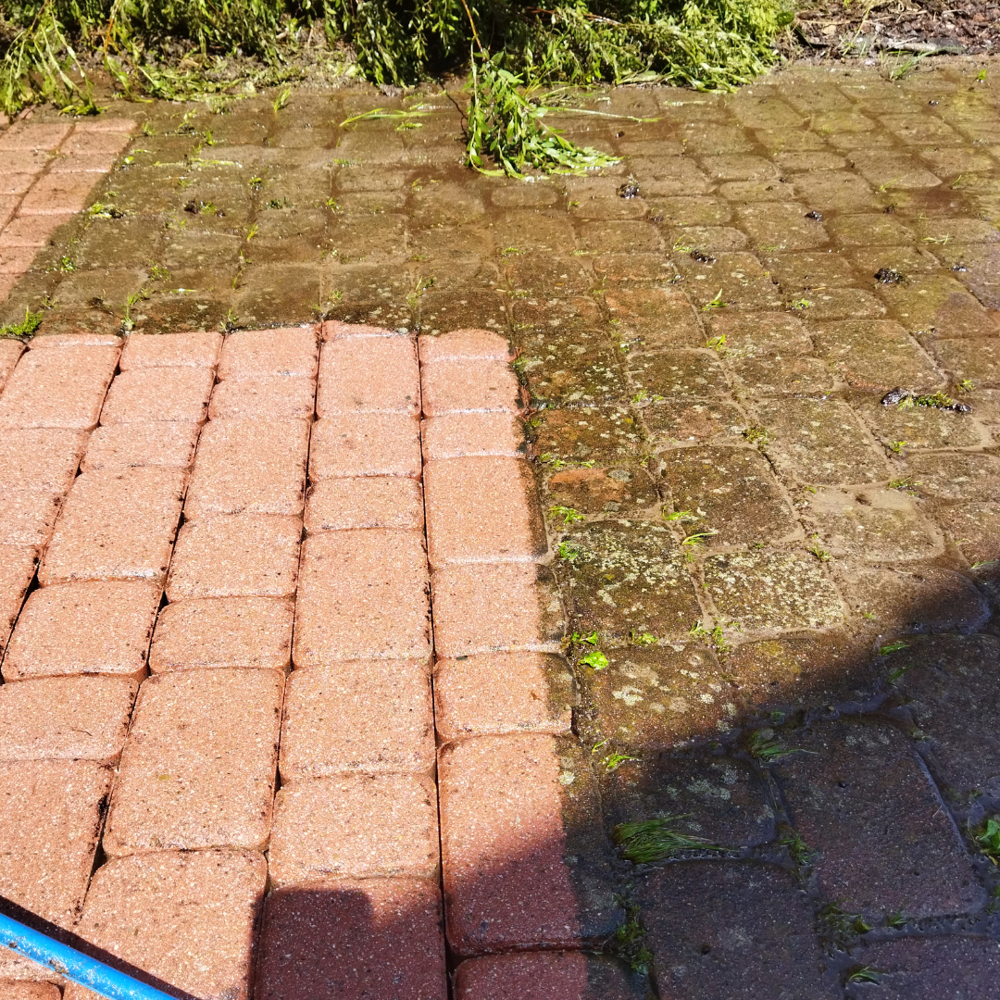

Piaskowanie czy mycie ciśnieniowe kostki brukowej — co wybrać?
Opublikowano: 10 lipca 2026 · BruClean Service Kraków

Kostka brukowa na podjeździe, chodniku czy tarasie z czasem ciemnieje, pokrywa się mchem i traci swój pierwotny kolor. Najczęstsze pytanie, jakie słyszymy od klientów w Krakowie i Małopolsce, brzmi: piaskować czy myć ciśnieniowo? Odpowiedź zależy od stanu kostki, rodzaju zabrudzeń i tego, co chcesz osiągnąć.
Czym różni się piaskowanie od mycia ciśnieniowego?
Mycie ciśnieniowe to czyszczenie kostki strumieniem wody pod wysokim ciśnieniem, czasem ze środkiem myjącym. Usuwa kurz, błoto, mech, glony i luźny brud z powierzchni, nie naruszając struktury kostki.
Piaskowanie działa mocniej — do strumienia wody dodawany jest drobny ścierniwo (piasek lub inny granulat), który mechanicznie usuwa głęboko wrośnięte zabrudzenia, plamy z oleju, rdzy, wykwity solne oraz starą, zniszczoną warstwę impregnatu. To metoda bardziej inwazyjna, ale też skuteczniejsza przy trudnych, wieloletnich zabrudzeniach.
Kiedy wystarczy mycie ciśnieniowe?
- Kostka jest czyszczona regularnie, raz w roku lub częściej
- Zabrudzenia to głównie kurz, błoto, liście, nalot glonów i mchu
- Kolor kostki jest wciąż stosunkowo jasny, bez głębokich plam
- Zależy Ci na szybszym i tańszym rozwiązaniu
Kiedy lepiej wybrać piaskowanie?
- Kostka nie była czyszczona od kilku lat i jest mocno przebarwiona
- Widoczne są plamy z oleju, smaru, rdzy lub wykwity solne
- Stara warstwa impregnatu odspaja się lub jest nierówna
- Zależy Ci na przywróceniu kostce niemal fabrycznego wyglądu
Impregnacja po czyszczeniu — dlaczego warto
Niezależnie od wybranej metody, po czyszczeniu warto zabezpieczyć kostkę impregnatem. Impregnacja spowalnia ponowne osadzanie się brudu, ułatwia utrzymanie czystości, chroni przed wilgocią i wykwitami solnymi oraz podkreśla kolor kostki. Dzięki temu kolejne mycie może być prostsze i rzadsze.
Ile to kosztuje?
Cena zależy od metody, powierzchni, stopnia zabrudzenia i tego, czy dodatkowo zlecasz impregnację. Najlepiej ocenić to na miejscu lub na podstawie zdjęć — dlatego przygotowujemy indywidualną, bezpłatną wycenę dla każdego zlecenia w Krakowie i okolicach.
Nie wiesz, którą metodę wybrać dla swojej kostki brukowej?
Zadzwoń po darmową wycenę